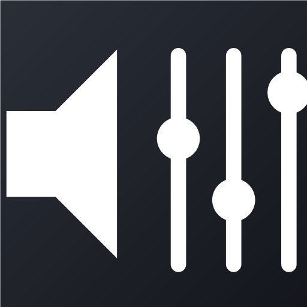
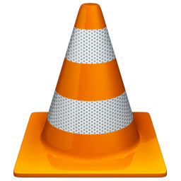

Per-app Windows volume on your Stream Deck+ dials.
One dial for all your media. Every app on the dial's list moves together.

Per-app Windows volume on your Stream Deck+ dials. Put several apps on one dial and they move together.
Every running app on the list follows the dial. The strip shows the highest-ranked one.
Choose from apps playing sound right now. ▲ raises priority, ✕ removes.
Push or tap to Mute/Unmute, or to Play/Pause media.
1–10% per click, from fine to fast.
Show Inactive lists apps you've used before, even when they're closed.
Raise or lower the volume. Rotating also unmutes, restoring the previous level.
Mute/Unmute, or Play/Pause media, per dial.
Does the same as pushing the dial.